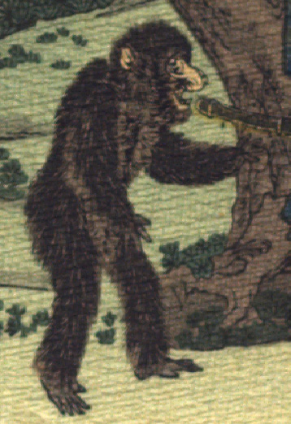

← 图鉴索引

猿。何も身につけず、後ろ脚で立っている。
著作者：J.E.de Campos／出典：親書誌：U426_nichibunken_0115：Momotaro／日付：2006／資源識別子：U426_nichibunken_0115_0002_0002
Copyright (c)2010- International Research Center for Japanese Studies, Kyoto, Japan. All rights reserved.